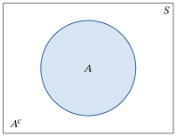
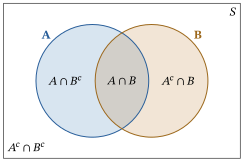
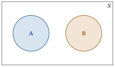
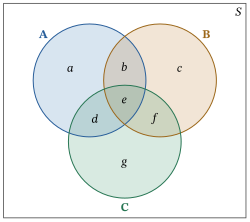
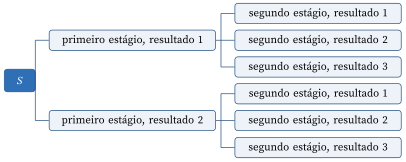
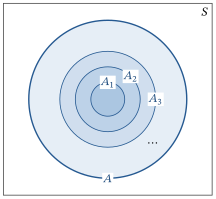
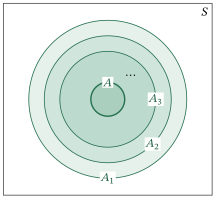

Capítulo 1Modelos de Probabilidade
Esboço do capítulo
- Seção 1 Probabilidade: Uma Medida de Incerteza
- Seção 2 Modelos de Probabilidade
- Seção 3 Propriedades dos Modelos de Probabilidade
- Seção 4 Probabilidade Uniforme em Espaços Finitos
- Seção 5 Probabilidade Condicional e Independência
- Seção 6 Continuidade de \(P\)
- Seção 7 Demonstrações Adicionais (Avançado)
Este capítulo apresenta o conceito básico de todo o curso, a saber, a probabilidade. Discutimos por que a probabilidade foi introduzida como um conceito científico e como ela foi formalizada matematicamente em termos de um modelo de probabilidade1. Em seguida, desenvolvemos alguns dos resultados matemáticos básicos associados ao modelo de probabilidade.
1.1 Probabilidade: Uma Medida de Incerteza
Muitas vezes, na vida, nos deparamos com a nossa própria ignorância. Seja quando pensamos no engarrafamento de hoje à noite, no tempo de amanhã, nos preços das ações na semana que vem, numa eleição que se aproxima ou em onde deixamos o chapéu, frequentemente não conhecemos um resultado com certeza. Em vez disso, somos obrigados a adivinhar, a estimar, a nos precaver em nossas apostas.
Probabilidade é a ciência da incerteza. Ela fornece regras matemáticas precisas para entender e analisar a nossa própria ignorância. Ela não nos diz como estará o tempo amanhã nem quais serão os preços das ações na semana que vem; em vez disso, nos dá uma estrutura para trabalhar com o nosso conhecimento limitado e para tomar decisões sensatas com base no que sabemos e no que não sabemos.
Dizer que há 40% de chance de chuva amanhã não é saber como estará o tempo amanhã. É, antes, saber o que não sabemos sobre o tempo de amanhã.
Neste texto, vamos desenvolver uma compreensão mais precisa do que significa dizer que há 40% de chance de chuva amanhã. Vamos aprender a trabalhar com ideias de aleatoriedade, probabilidade, valor esperado2, previsão, estimação3 etc., de maneiras que sejam sensatas e matematicamente claras.
Há também outras fontes de aleatoriedade além da incerteza. Por exemplo, os computadores costumam usar números pseudoaleatórios4 para tornar os jogos divertidos, as simulações precisas e as buscas eficientes. Além disso, segundo a teoria moderna da mecânica quântica, a constituição da matéria atômica é, em certo sentido, verdadeiramente aleatória. Todas essas fontes de aleatoriedade podem ser estudadas com as técnicas deste texto.
Outra maneira de pensar sobre probabilidade é em termos de frequência relativa5. Por exemplo, dizer que uma moeda tem 50% de chance de dar cara pode ser interpretado como dizer que, se lançássemos a moeda muitas e muitas vezes, ela daria cara aproximadamente na metade das vezes. Essa interpretação tem algumas limitações. Em muitos casos (como o tempo de amanhã ou os preços das ações na semana que vem), é impossível repetir o experimento muitas e muitas vezes. Além disso, o que exatamente significa “aproximadamente” nesse caso? Apesar dessas limitações, porém, a interpretação por frequência relativa é uma maneira útil de pensar sobre probabilidades e de desenvolver intuição sobre elas.
A incerteza nos acompanha desde sempre, é claro, mas a teoria matemática da probabilidade surgiu no século XVII. Em 1654, o jogador parisiense Le Chevalier de Méré perguntou a Blaise Pascal sobre certas probabilidades que apareciam nos jogos de azar (por exemplo: se um jogo de azar é interrompido no meio, qual é a probabilidade de que cada jogador teria vencido caso o jogo continuasse?). Pascal ficou intrigado e se correspondeu com o grande matemático e advogado Pierre de Fermat sobre essas questões. Mais tarde, Pascal escreveu o livro Traité du Triangle Arithmetique, em que discute os coeficientes binomiais (o triângulo de Pascal) e a distribuição de probabilidade binomial.
No início do século XX, russos como Andrei Andreyevich Markov, Andrey Nikolayevich Kolmogorov e Pafnuty L. Chebychev (e o americano Norbert Wiener) desenvolveram uma teoria matemática da probabilidade mais formal. Na década de 1950, os americanos William Feller e Joe Doob escreveram livros importantes sobre a matemática da teoria da probabilidade. Eles popularizaram o assunto no mundo ocidental, tanto como uma área importante da matemática pura quanto pelas suas aplicações importantes na física, na química e, mais tarde, na ciência da computação, na economia e nas finanças.
1.1.1 Por Que Precisamos da Teoria da Probabilidade?
A teoria da probabilidade aparece com muita frequência no nosso dia a dia. Apresentamos alguns exemplos aqui.
Suponha que você esteja pensando em comprar um bilhete da loteria “Lotto 6/49”. Nessa loteria, você escolhe seis números inteiros distintos entre 1 e 49. Em seguida, outros seis inteiros distintos entre 1 e 49 são sorteados ao acaso pela empresa da loteria. Se os dois conjuntos de seis inteiros forem idênticos, você ganha o prêmio máximo.
Depois de dominar a Seção 1.4, você saberá calcular que a probabilidade de os dois conjuntos coincidirem é igual a uma chance em 13.983.816. Ou seja, é cerca de 14 milhões de vezes mais provável que você não ganhe o prêmio máximo do que ganhe. (Não são chances muito boas!)
Suponha que os bilhetes da loteria custem US$ 1 cada. Depois de dominar os valores esperados no Capítulo 3, você saberá que não deve nem sequer cogitar comprar um bilhete de loteria a menos que o prêmio máximo seja maior que US$ 14 milhões (o que normalmente não é). Além disso, se o prêmio máximo algum dia passar de US$ 14 milhões, é provável que muitas outras pessoas comprem bilhetes
naquela semana, o que aumenta a probabilidade de você ter de dividir o prêmio máximo com outros ganhadores mesmo que ganhe — portanto, provavelmente não vale a pena comprar um bilhete de loteria nem mesmo nesse caso.
Suponha, em vez disso, que um “amigo” lhe proponha uma aposta. Ele tem três cartas: uma vermelha dos dois lados, uma preta dos dois lados e uma vermelha de um lado e preta do outro. Ele mistura as três cartas num chapéu, tira uma ao acaso e a coloca deitada sobre a mesa, com apenas um lado à mostra. Suponha que esse lado seja vermelho. Ele então propõe apostar os US$ 4 dele contra os seus US$ 3 que o outro lado da carta também é vermelho.
À primeira vista, você pode achar que a probabilidade de o outro lado também ser vermelho é de 50%; logo, uma boa aposta. No entanto, depois de dominar a probabilidade condicional6 (Seção 1.5), você saberá que, dado que um lado é vermelho, a probabilidade condicional de o outro lado também ser vermelho é igual a 2/3. Assim, pela teoria dos valores esperados (Capítulo 3), você saberá que não deve aceitar a aposta do seu “amigo”.
Por fim, suponha que ele sugira que você lance uma moeda mil vezes. Seu “amigo” diz que, se a moeda der cara pelo menos seiscentas vezes, ele lhe pagará US$ 100; caso contrário, você terá de pagar a ele apenas US$ 1.
À primeira vista, você pode achar que, embora 500 caras seja o mais provável, ainda há uma chance razoável de aparecerem 600 caras — pelo menos boa o bastante para justificar aceitar a aposta de US$ 100 contra US$ 1 do seu amigo. No entanto, depois de dominar as leis dos grandes números (Capítulo 4), você saberá que, à medida que o número de lançamentos da moeda cresce, torna-se cada vez mais provável que o número de caras fique muito próximo da metade do número total de lançamentos. De fato, neste caso, há menos de uma chance em dez bilhões de se obterem mais de 600 caras! Portanto, você também não deve aceitar essa aposta.
Como mostram esses exemplos, uma boa compreensão da teoria da probabilidade permitirá que você avalie corretamente as probabilidades em situações do dia a dia, o que, por sua vez, permitirá que você tome decisões mais sensatas. Pode até fazer você economizar dinheiro!
A teoria da probabilidade também desempenha um papel fundamental em muitas aplicações importantes da ciência e da tecnologia. Por exemplo, o projeto de um reator nuclear deve ser tal que o vazamento de radioatividade para o meio ambiente seja um evento extremamente raro. É claro que gostaríamos de dizer que é categoricamente impossível que isso aconteça algum dia, mas reatores são sistemas complicados, formados por muitos subsistemas interligados, e sabemos que cada um deles vai deixar de funcionar direito em algum momento. Além disso, nunca podemos afirmar com certeza que não pode ocorrer um evento natural, como um terremoto, que danifique o reator o suficiente para permitir uma emissão. O melhor que podemos fazer é tentar quantificar a nossa incerteza a respeito das falhas dos componentes do reator ou da ocorrência de eventos naturais que levariam a tal evento. É aí que a probabilidade entra em cena. Usando a probabilidade como ferramenta para lidar com as incertezas, o reator pode ser projetado para garantir que uma emissão inaceitável tenha uma probabilidade extremamente pequena — digamos, uma vez em um bilhão de anos — de ocorrer.
Os exemplos dos jogos de azar e do reator nuclear tratam essencialmente do conceito de risco — o risco de perder dinheiro, o risco de ser exposto a um nível nocivo de radioatividade etc. Na verdade, estamos expostos a riscos o tempo todo. Quando andamos de carro, viajamos de avião ou mesmo quando caminhamos pela rua, estamos expostos a riscos. Sabemos que o risco de nos ferirmos nessas circunstâncias nunca é zero, e ainda assim continuamos a realizar essas atividades. Isso acontece porque percebemos intuitivamente que a probabilidade de ocorrer um acidente é extremamente baixa.
Assim, usamos a probabilidade todos os dias da nossa vida para avaliar riscos. À medida que os problemas que enfrentamos, individual ou coletivamente, ficam mais complicados, precisamos refinar e desenvolver as nossas ideias intuitivas e grosseiras sobre probabilidade para chegar a uma abordagem clara e precisa. É por isso que a teoria da probabilidade se desenvolveu como disciplina. Aliás, o setor de seguros se desenvolveu para nos ajudar a lidar com o risco. A probabilidade é a ferramenta usada para determinar quanto você paga para reduzir o seu risco ou para indenizar você ou a sua família em caso de lesão pessoal.
Resumo da Seção 1.1
- A teoria da probabilidade nos dá uma compreensão precisa da incerteza.
- Essa compreensão pode nos ajudar a fazer previsões, tomar decisões melhores, avaliar riscos e até ganhar dinheiro.
Tópicos para discussão
1.1.1 Você acha que o tempo de amanhã e os preços das ações na semana que vem são “realmente” aleatórios, ou essa é apenas uma maneira conveniente de discuti-los e analisá-los?
1.1.2 Você acha que é possível que as probabilidades dependam de quem as observa, ou de quando são observadas?
1.1.3 Você acha surpreendente que a teoria da probabilidade não tenha sido discutida como assunto matemático até o século XVII? Por quê?
1.1.4 De que maneiras a probabilidade é importante para áreas como a física, a ciência da computação e as finanças? Explique.
1.1.5 Quais são exemplos da sua própria vida em que pensar em probabilidades economizou — ou poderia ter economizado — dinheiro, ou ajudou você a tomar uma decisão melhor? (Liste tantos quantos puder.)
1.1.6 As probabilidades costumam ser retratadas em filmes e programas de televisão populares. Liste tantos exemplos quanto puder. Você acha que as probabilidades foram retratadas ali de maneira “razoável”?
1.2 Modelos de Probabilidade
Uma definição formal de probabilidade começa com um espaço amostral7, geralmente denotado por \(S\). Esse espaço amostral é qualquer conjunto que liste todos os resultados (ou respostas) possíveis de algum experimento ou situação desconhecida. Por exemplo, talvez \[ S = \{\text{chuva}, \ \text{neve}, \ \text{limpo}\} \] ao prever o tempo de amanhã. Ou talvez \(S\) seja o conjunto de todos os números reais positivos, ao prever o preço de uma ação na próxima semana. O ponto é que \(S\) pode ser qualquer conjunto, até mesmo um conjunto infinito. Costumamos escrever \(s\) para um elemento de \(S\), de modo que \(s \in S\). Observe que \(S\) descreve apenas aquilo que nos interessa; se estamos estudando o tempo, então chuva e neve estão em \(S\), mas os preços das ações de amanhã não estão.
Um modelo de probabilidade também exige uma coleção de eventos, que são subconjuntos de \(S\) aos quais se podem atribuir probabilidades. No exemplo do tempo acima, os subconjuntos \(\{\text{chuva}\}\), \(\{\text{neve}\}\), \(\{\text{chuva}, \allowbreak\text{neve}\}\), \(\{\text{chuva}, \allowbreak\text{limpo}\}\), \(\{\text{chuva}, \allowbreak\text{neve}, \allowbreak\text{limpo}\}\) e até o conjunto vazio \(\emptyset = \{\ \}\) são todos exemplos de subconjuntos de \(S\) que poderiam ser eventos. Observe que aqui a vírgula significa “ou”; assim, \(\{\text{chuva}, \allowbreak\text{neve}\}\) é o evento de que vai chover ou nevar. Em geral, vamos supor que todos os subconjuntos de \(S\) são eventos. (Na verdade, em situações complicadas há algumas restrições técnicas sobre quais subconjuntos podem ou não ser eventos, de acordo com a área da matemática chamada teoria da medida8. Mas não vamos nos ocupar dessas tecnicalidades aqui.)
Por fim, e mais importante, um modelo de probabilidade exige uma medida de probabilidade9, geralmente denotada por \(P\). Essa medida de probabilidade deve atribuir a cada evento \(A\) uma probabilidade \(P(A)\). Exigimos as seguintes propriedades:
- \(P(A)\) é sempre um número real não negativo10, entre 0 e 1, inclusive.
- \(P(\emptyset) = 0\), isto é, se \(A\) é o conjunto vazio \(\emptyset\), então \(P(A) = 0\).
- \(P(S) = 1\), isto é, se \(A\) é o espaço amostral \(S\) inteiro, então \(P(A) = 1\).
- \(P\) é (enumeravelmente) aditiva, o que significa que, se \(A_1, A_2, \ldots\) é uma sequência finita ou enumerável11 de eventos disjuntos12, então \begin{equation} P(A_1 \cup A_2 \cup \cdots) = P(A_1) + P(A_2) + \cdots . \tag{1.2.1} \end{equation}
A primeira dessas propriedades diz que vamos medir todas as probabilidades numa escala de 0 a 1, em que 0 significa impossível e 1 (ou 100%) significa certo. A segunda propriedade diz que a probabilidade de que nada aconteça é 0; em outras palavras, é impossível que nenhum resultado ocorra. A terceira propriedade diz que a probabilidade de que algo aconteça é 1; em outras palavras, é certo que algum resultado deve ocorrer.
A quarta propriedade é a mais sutil. Ela diz que podemos calcular probabilidades de eventos complicados somando as probabilidades de eventos menores, desde que esses eventos menores sejam disjuntos e, juntos, contenham o evento complicado inteiro. Observe que eventos são disjuntos se não têm nenhum resultado em comum. Por exemplo, \(\{\text{chuva}\}\) e \(\{\text{neve}, \allowbreak\text{limpo}\}\) são disjuntos, ao passo que \(\{\text{chuva}\}\) e \(\{\text{chuva}, \allowbreak\text{limpo}\}\) não são disjuntos. (Estamos supondo, por simplicidade, que não pode chover e nevar amanhã.) Assim, devemos ter \(P(\{\text{chuva}\})\) \({}+ P(\{\text{neve}, \allowbreak\text{limpo}\})\) \({}= P(\{\text{chuva}, \allowbreak\text{neve}, \allowbreak\text{limpo}\})\), mas não devemos esperar ter \(P(\{\text{chuva}\})\) \({}+ P(\{\text{chuva}, \allowbreak\text{limpo}\})\) \({}= P(\{\text{chuva}, \allowbreak\text{chuva}, \allowbreak\text{limpo}\})\) (este último sendo o mesmo que \(P(\{\text{chuva}, \allowbreak\text{limpo}\})\)).
Agora formalizamos a definição de modelo de probabilidade.
Um modelo de probabilidade consiste em um conjunto não vazio chamado espaço amostral \(S\); uma coleção de eventos que são subconjuntos de \(S\); e uma medida de probabilidade \(P\) que atribui uma probabilidade entre 0 e 1 a cada evento, com \(P(\emptyset) = 0\) e \(P(S) = 1\) e com \(P\) aditiva como em (1.2.1).
Considere de novo o exemplo do tempo, com \(S = \{\text{chuva}, \text{neve}, \text{limpo}\}\). Suponha que a probabilidade de chuva seja 40%, a probabilidade de neve seja 15% e a probabilidade de um dia limpo seja 45%. Podemos expressar isso como \(P(\{\text{chuva}\}) = 0{,}40\), \(P(\{\text{neve}\}) = 0{,}15\) e \(P(\{\text{limpo}\}) = 0{,}45\).
Neste exemplo, é claro que \(P(\emptyset) = 0\), isto é, é impossível que nada aconteça amanhã. Além disso, \(P(\{\text{chuva}, \text{neve}, \text{limpo}\})\) \({}= 1\), porque estamos supondo que exatamente um entre chuva, neve ou tempo limpo deve ocorrer amanhã. (Para ser mais realista, poderíamos dizer que estamos prevendo o tempo exatamente às 11h da manhã de amanhã.) Agora, qual é a probabilidade de que chova ou neve amanhã? Bem, pela propriedade de aditividade, vemos que \[ P(\{\text{chuva}, \text{neve}\}) = P(\{\text{chuva}\}) + P(\{\text{neve}\}) = 0{,}40 + 0{,}15 = 0{,}55. \] Concluímos assim que, como esperado, há 55% de chance de chuva ou neve amanhã.
Suponha que seu candidato tenha 60% de chance de vencer uma eleição em andamento. Então \(S = \{\text{vitória}, \text{derrota}\}\), com \(P(\text{vitória}) = 0{,}6\) e \(P(\text{derrota}) = 0{,}4\). Observe que \(P(\text{vitória}) + P(\text{derrota}) = 1\).
Suponha que lançamos uma moeda honesta, que pode dar cara (\(H\)) ou coroa (\(T\)) com igual probabilidade. Então \(S = \{H, T\}\), com \(P(H) = P(T) = 0{,}5\). É claro que \(P(H) + P(T) = 1\).
Suponha que lançamos três moedas honestas em sequência e registramos a sequência de caras e coroas resultante. Então \[ S = \{HHH, HHT, HTH, HTT, THH, THT, TTH, TTT\}. \] Além disso, esses oito resultados são todos igualmente prováveis; assim, \(P(HHH) = 1/8\), \(P(TTT) = 1/8\) etc. Também, a probabilidade de que a primeira moeda dê cara e a segunda dê coroa, sendo a terceira qualquer uma, é igual à soma das probabilidades dos eventos \(HTH\) e \(HTT\), isto é, \(P(HTH) + P(HTT) = 1/8 + 1/8 = 1/4\).
Suponha que lançamos três moedas honestas em sequência, mas nos importamos apenas com o número de caras resultante. Então \(S = \{0, 1, 2, 3\}\). No entanto, as probabilidades desses quatro resultados não são todas iguais; veremos mais adiante que, na verdade, \(P(0) = P(3) = 1/8\), enquanto \(P(1) = P(2) = 3/8\).
Observamos que também é possível definir modelos de probabilidade em espaços amostrais mais complicados (por exemplo, infinitos não enumeráveis).
Suponha que \(S = [0, 1]\) seja o intervalo unitário. Podemos definir uma medida de probabilidade \(P\) em \(S\) dizendo que \begin{equation} P([a, b]) = b - a\,, \qquad \text{sempre que } 0 \le a \le b \le 1. \tag{1.2.2} \end{equation} Em palavras, para qualquer13 subintervalo \([a, b]\) de \([0, 1]\), a probabilidade do intervalo é simplesmente o comprimento desse intervalo. Este exemplo é chamado de distribuição uniforme14 em \([0, 1]\). A distribuição uniforme é apenas a primeira de muitas distribuições em espaços de estados não enumeráveis. Muitos outros exemplos serão dados no Capítulo 2.
1.2.1 Diagramas de Venn e Subconjuntos
Os diagramas de Venn oferecem um método gráfico muito útil para representar o espaço amostral \(S\) e seus subconjuntos. Por exemplo, na Figura 1.2.1 temos um diagrama de Venn15 que mostra o subconjunto \(A \subset S\) e o complementar16 \[ A^c = \{s : s \notin A\} \] de \(A\). O retângulo representa o espaço amostral \(S\) inteiro. O círculo (e seu interior) representa o subconjunto \(A\); a região fora do círculo, mas dentro de \(S\), representa \(A^c\).

Dois subconjuntos \(A \subset S\) e \(B \subset S\) são representados por dois círculos, como na Figura 1.2.2 na próxima página. A interseção \[ A \cap B = \{s : s \in A \text{ e } s \in B\} \] dos subconjuntos \(A\) e \(B\) é o conjunto dos elementos comuns aos dois conjuntos e é representada pela região onde os dois círculos se sobrepõem. O conjunto \[ A \setminus B = A \cap B^c = \{s : s \in A \text{ e } s \notin B\} \] é chamado de complementar de \(B\) em \(A\) e é representado pela região dentro do círculo \(A\), mas fora do círculo \(B\). Esse é o conjunto dos elementos que estão em \(A\) mas não em \(B\). Da mesma forma, temos o complementar de \(A\) em \(B\), a saber, \(A^c \cap B\). Observe que os conjuntos \(A \cap B\), \(A \cap B^c\) e \(A^c \cap B\) são disjuntos dois a dois17.
A união \[ A \cup B = \{s : s \in A \text{ ou } s \in B\} \] dos conjuntos \(A\) e \(B\) é o conjunto dos elementos que estão em \(A\) ou em \(B\). Na Figura 1.2.2, ela é representada pela região coberta pelos dois círculos. Observe que \(A \cup B = (A \cap B^c) \cup (A \cap B) \cup (A^c \cap B)\).
Há mais uma região na Figura 1.2.2. É o complementar de \(A \cup B\), a saber, o conjunto dos elementos que não estão nem em \(A\) nem em \(B\). Assim, temos imediatamente \[ (A \cup B)^c = A^c \cap B^c. \] Da mesma forma, podemos mostrar que \[ (A \cap B)^c = A^c \cup B^c, \] isto é, o subconjunto dos elementos que não estão ao mesmo tempo em \(A\) e em \(B\) é dado pelo conjunto dos elementos que não estão em \(A\) ou não estão em \(B\).

Por fim, observamos que, se \(A\) e \(B\) são subconjuntos disjuntos, faz sentido representá-los como na Figura 1.2.3, isto é, como dois círculos que não se sobrepõem, já que eles não têm elementos em comum.

Resumo da Seção 1.2
- Um modelo de probabilidade consiste em um espaço amostral \(S\) e uma medida de probabilidade \(P\) que atribui probabilidades a cada evento.
- Diferentes tipos de conjuntos podem surgir como espaços amostrais.
- Os diagramas de Venn oferecem um método conveniente para representar conjuntos e as relações entre eles.
Exercícios
1.2.1 Suponha que \(S = \{1, 2, 3\}\), com \(P(\{1\}) = 1/2\), \(P(\{2\}) = 1/3\) e \(P(\{3\}) = 1/6\). (a) Quanto vale \(P(\{1, 2\})\)?(b) Quanto vale \(P(\{1, 2, 3\})\)?(c) Liste todos os eventos \(A\) tais que \(P(A) = 1/2\).
1.2.2 Suponha que \(S = \{1, 2, 3, 4, 5, 6, 7, 8\}\), com \(P(\{s\}) = 1/8\) para \(1 \le s \le 8\). (a) Quanto vale \(P(\{1, 2\})\)?(b) Quanto vale \(P(\{1, 2, 3\})\)?(c) Quantos eventos \(A\) existem tais que \(P(A) = 1/2\)?
1.2.3 Suponha que \(S = \{1, 2, 3\}\), com \(P(\{1\}) = 1/2\) e \(P(\{1, 2\}) = 2/3\). Quanto deve valer \(P(\{2\})\)?
1.2.4 Suponha que \(S = \{1, 2, 3\}\) e que tentamos definir \(P\) por \(P(\{1, 2, 3\}) = 1\), \(P(\{1, 2\}) = 0{,}7\), \(P(\{1, 3\}) = 0{,}5\), \(P(\{2, 3\}) = 0{,}7\), \(P(\{1\}) = 0{,}2\), \(P(\{2\}) = 0{,}5\), \(P(\{3\}) = 0{,}3\). \(P\) é uma medida de probabilidade válida? Por quê?
1.2.5 Considere a distribuição uniforme em \([0, 1]\). Seja \(s \in [0, 1]\) um resultado qualquer. Quanto vale \(P(\{s\})\)? Esse resultado surpreende você?
1.2.6 Rotule as sub-regiões do diagrama de Venn da Figura 1.2.4 usando os conjuntos \(A\), \(B\) e \(C\) e seus complementares (assim como fizemos na Figura 1.2.2).
1.2.7 Num diagrama de Venn, represente o conjunto dos elementos que estão nos subconjuntos \(A\) ou \(B\), mas não em ambos. Escreva também esse conjunto como um subconjunto envolvendo uniões e interseções de \(A\), \(B\) e seus complementares.
1.2.8 Suponha que \(S = \{1, 2, 3\}\), \(P(\{1, 2\}) = 1/3\) e \(P(\{2, 3\}) = 2/3\). Calcule \(P(\{1\})\), \(P(\{2\})\) e \(P(\{3\})\).
1.2.9 Suponha que \(S = \{1, 2, 3, 4\}\), \(P(\{1\}) = 1/12\), \(P(\{1, 2\}) = 1/6\) e \(P(\{1, 2, 3\}) = 1/3\). Calcule \(P(\{1\})\), \(P(\{2\})\), \(P(\{3\})\) e \(P(\{4\})\).
1.2.10 Suponha que \(S = \{1, 2, 3\}\) e \(P(\{1\}) = P(\{3\}) = 2\,P(\{2\})\). Calcule \(P(\{1\})\), \(P(\{2\})\) e \(P(\{3\})\).
1.2.11 Suponha que \(S = \{1, 2, 3\}\), \(P(\{1\}) = P(\{2\}) + 1/6\) e \(P(\{3\}) = 2\,P(\{2\})\). Calcule \(P(\{1\})\), \(P(\{2\})\) e \(P(\{3\})\).
1.2.12 Suponha que \(S = \{1, 2, 3, 4\}\) e \(P(\{1\}) - 1/8\) \({}= P(\{2\}) = 3\,P(\{3\})\) \({}= 4\,P(\{4\})\). Calcule \(P(\{1\})\), \(P(\{2\})\), \(P(\{3\})\) e \(P(\{4\})\).

Problemas
1.2.13 Considere de novo a distribuição uniforme em \([0, 1]\). É verdade que \[ P([0, 1]) = \sum_{s \in [0, 1]} P(\{s\})\,? \] Como isso se relaciona com a propriedade de aditividade das medidas de probabilidade?
1.2.14 Suponha que \(S\) seja um conjunto finito ou enumerável. É possível que \(P(\{s\}) = 0\) para todo \(s \in S\)? Por quê?
1.2.15 Suponha que \(S\) seja um conjunto não enumerável18. É possível que \(P(\{s\}) = 0\) para todo \(s \in S\)? Por quê?
Tópicos para discussão
1.2.16 A propriedade de aditividade faz sentido intuitivamente? Por quê?
1.2.17 É importante que tenhamos sempre \(P(S) = 1\)? Como a teoria da probabilidade mudaria se não fosse assim?
1.3 Propriedades dos Modelos de Probabilidade
A propriedade de aditividade das medidas de probabilidade implica automaticamente certas propriedades básicas. Elas valem para qualquer modelo de probabilidade.
Se \(A\) é um evento qualquer, escrevemos \(A^c\) (lê-se “complementar de \(A\)”) para o evento em que \(A\) não ocorre. No exemplo do tempo, se \(A = \{\text{chuva}\}\), então \(A^c = \{\text{neve}, \text{limpo}\}\). Nos exemplos das moedas, se \(A\) é o evento em que a primeira moeda dá cara, então \(A^c\) é o evento em que a primeira moeda dá coroa.
Ora, \(A\) e \(A^c\) são sempre disjuntos. Além disso, sua união é sempre o espaço amostral inteiro: \(A \cup A^c = S\). Logo, pela propriedade de aditividade, devemos ter \(P(A) + P(A^c) = P(S)\). Mas sempre temos \(P(S) = 1\). Assim, \(P(A) + P(A^c) = 1\), ou \begin{equation} P(A^c) = 1 - P(A). \tag{1.3.1} \end{equation} Em palavras, a probabilidade de um evento qualquer não ocorrer é igual a um menos a probabilidade de ele ocorrer. Esse é um fato muito útil, que usaremos com frequência.
Suponha agora que \(A_1, A_2, \ldots\) sejam eventos que formam uma partição do espaço amostral \(S\). Isso significa que \(A_1, A_2, \ldots\) são disjuntos e, além disso, que sua união é igual a \(S\), isto é, \(A_1 \cup A_2 \cup \cdots = S\). Temos o seguinte teorema básico, que permite decompor o cálculo da probabilidade de \(B\) na soma das probabilidades dos conjuntos \(A_i \cap B\). Muitas vezes, essas são mais fáceis de calcular.
Sejam \(A_1, A_2, \ldots\) eventos que formam uma partição do espaço amostral \(S\). Seja \(B\) um evento qualquer. Então \[ P(B) = P(A_1 \cap B) + P(A_2 \cap B) + \cdots . \]
Os eventos \((A_1 \cap B), (A_2 \cap B), \ldots\) são disjuntos, e sua união é \(B\). Logo, o resultado segue imediatamente da propriedade de aditividade (1.2.1).
Uma versão um pouco mais útil da lei da probabilidade total, bem como aplicações de seu uso, é apresentada na Seção 1.5.
Suponha agora que \(A\) e \(B\) sejam dois eventos tais que \(A\) contém \(B\) (em símbolos, \(A \supseteq B\)). Em palavras, todos os resultados de \(B\) também estão em \(A\). Intuitivamente, \(A\) é um evento “maior” que \(B\), de modo que esperaríamos que sua probabilidade fosse maior. Temos o seguinte resultado.
Sejam \(A\) e \(B\) dois eventos com \(A \supseteq B\). Então \begin{equation} P(A) = P(B) + P(A \cap B^c). \tag{1.3.2} \end{equation}
Podemos escrever \(A = B \cup (A \cap B^c)\), em que \(B\) e \(A \cap B^c\) são disjuntos. Logo, \(P(A) = P(B) + P(A \cap B^c)\) por aditividade.
Como sempre temos \(P(A \cap B^c) \geq 0\), concluímos o seguinte.
Sejam \(A\) e \(B\) dois eventos, com \(A \supseteq B\). Então \[ P(A) \geq P(B). \]
Por outro lado, reorganizando (1.3.2), obtemos o seguinte.
Sejam \(A\) e \(B\) dois eventos, com \(A \supseteq B\). Então \begin{equation} P(A \cap B^c) = P(A) - P(B). \tag{1.3.3} \end{equation}
Mais geralmente, mesmo que não tenhamos \(A \supseteq B\), vale a seguinte propriedade.
Sejam \(A\) e \(B\) dois eventos. Então \begin{equation} P(A \cup B) = P(A) + P(B) - P(A \cap B). \tag{1.3.4} \end{equation}
Podemos escrever \(A \cup B = (A \cap B^c) \cup (B \cap A^c) \cup (A \cap B)\), em que \(A \cap B^c\), \(B \cap A^c\) e \(A \cap B\) são disjuntos. Por aditividade, temos \begin{equation} P(A \cup B) = P(A \cap B^c) + P(B \cap A^c) + P(A \cap B). \tag{1.3.5} \end{equation} Por outro lado, usando o Corolário 1.3.2 (com \(B\) substituído por \(A \cap B\)), temos \begin{equation} P(A \cap B^c) = P(A \cap (A \cap B)^c) = P(A) - P(A \cap B) \tag{1.3.6} \end{equation} e, de modo análogo, \begin{equation} P(B \cap A^c) = P(B) - P(A \cap B). \tag{1.3.7} \end{equation} Substituindo (1.3.6) e (1.3.7) em (1.3.5), o resultado segue.
Uma versão mais geral do princípio da inclusão-exclusão é desenvolvida no Desafio 1.3.10.
Às vezes não precisamos calcular a probabilidade de uma união; basta saber que ela é limitada superiormente pela soma das probabilidades dos eventos individuais. Isso se chama subaditividade22.
Seja \(A_1, A_2, \ldots\) uma sequência finita ou infinita enumerável de eventos, não necessariamente disjuntos. Então \[ P(A_1 \cup A_2 \cup \cdots) \leq P(A_1) + P(A_2) + \cdots . \]
Veja a Seção 1.7 para a demonstração deste resultado.
Observamos que algumas propriedades da definição de modelo de probabilidade na verdade decorrem de outras. Por exemplo, uma vez que sabemos que a probabilidade \(P\) é aditiva e que \(P(S) = 1\), segue que necessariamente \(P(\emptyset) = 0\). De fato, como \(S\) e \(\emptyset\) são disjuntos, \(P(S \cup \emptyset) = P(S) + P(\emptyset)\). Mas, é claro, \(P(S \cup \emptyset) = P(S) = 1\), de modo que devemos ter \(P(\emptyset) = 0\).
Do mesmo modo, uma vez que sabemos que \(P\) é aditiva em sequências infinitas enumeráveis de eventos disjuntos, segue que \(P\) também tem de ser aditiva em sequências finitas de eventos disjuntos. De fato, dada uma sequência finita disjunta \(A_1, \ldots, A_n\), basta tomar \(A_i = \emptyset\) para todo \(i > n\) para obter uma sequência infinita enumerável disjunta com a mesma união e a mesma soma de probabilidades.
Resumo da Seção 1.3
- A probabilidade do complementar de um evento é igual a um menos a probabilidade do evento.
- As probabilidades sempre satisfazem as propriedades básicas de probabilidade total, subaditividade e monotonicidade.
- O princípio da inclusão-exclusão permite calcular \(P(A \cup B)\) em termos de eventos mais simples.
Exercícios
1.3.1 Suponha que \(S = \{1, 2, \ldots, 100\}\). Suponha, além disso, que \(P(\{1\}) = 0{,}1\). (a) Qual é a probabilidade \(P(\{2, 3, 4, \ldots, 100\})\)?(b) Qual é o menor valor possível de \(P(\{1, 2, 3\})\)?
1.3.2 Suponha que Al assista ao telejornal das seis horas em \(2/3\) das vezes, ao telejornal das onze horas em \(1/2\) das vezes e a ambos, o das seis e o das onze, em \(1/3\) das vezes. Num dia escolhido ao acaso, qual é a probabilidade de que Al assista apenas ao telejornal das seis? Num dia escolhido ao acaso, qual é a probabilidade de que Al não assista a nenhum dos dois telejornais?
1.3.3 Suponha que um funcionário chegue atrasado em 10% das vezes, saia mais cedo em 20% das vezes, e chegue atrasado e saia mais cedo em 5% das vezes. Qual é a probabilidade de que, num dado dia, esse funcionário chegue atrasado ou saia mais cedo (ou ambos)?
1.3.4 Suponha que seu joelho direito doa em 15% do tempo e que seu joelho esquerdo doa em 10% do tempo. Qual é a maior porcentagem possível do tempo em que pelo menos um dos seus joelhos está dolorido? Qual é a menor porcentagem possível do tempo em que pelo menos um dos seus joelhos está dolorido?
1.3.5 Suponha que uma moeda honesta seja lançada cinco vezes seguidas. (a) Qual é a probabilidade de obter cara em todos os cinco lançamentos?(b) Qual é a probabilidade de obter pelo menos uma coroa?
1.3.6 Suponha que uma carta seja escolhida uniformemente ao acaso de um baralho comum de 52 cartas. (a) Qual é a probabilidade de que a carta seja um valete?(b) Qual é a probabilidade de que a carta seja de paus?(c) Qual é a probabilidade de que a carta seja um valete e de paus?(d) Qual é a probabilidade de que a carta seja um valete ou de paus (ou ambos)?
1.3.7 Suponha que seu time tenha 40% de chance de vencer ou empatar o jogo de hoje e 30% de chance de vencer o jogo de hoje. Qual é a probabilidade de que o jogo de hoje termine empatado?
1.3.8 Suponha que 55% dos estudantes sejam do sexo feminino, dos quais 4/5 (44%) têm cabelo comprido, e que 45% sejam do sexo masculino, dos quais 1/3 (15% de todos os estudantes) têm cabelo comprido. Qual é a probabilidade de que um estudante escolhido ao acaso seja do sexo feminino ou tenha cabelo comprido (ou ambos)?
Problemas
1.3.9 Suponha que escolhemos um inteiro positivo ao acaso, de acordo com alguma distribuição de probabilidade desconhecida. Suponha ainda que saibamos que \(P(\{1, 2, 3, 4, 5\}) = 0{,}3\), que \(P(\{4, 5, 6\}) = 0{,}4\) e que \(P(\{1\}) = 0{,}1\). Quais são o maior e o menor valores possíveis de \(P(\{2\})\)?
Desafios
1.3.10 Generalize o princípio da inclusão-exclusão, da seguinte forma. (a) Suponha que haja três eventos \(A\), \(B\) e \(C\). Prove que \begin{align*} P(A \cup B \cup C) = P(A) + P(B) + P(C) &- P(A \cap B) - P(A \cap C) \\ &- P(B \cap C) + P(A \cap B \cap C). \end{align*}(b) Suponha que haja \(n\) eventos \(A_1, A_2, \ldots, A_n\). Prove que \begin{align*} P(A_1 \cup \cdots \cup A_n) &= \sum_{i=1}^{n} P(A_i) - \sum_{\substack{i,j=1\\ i<j}}^{n} P(A_i \cap A_j) + \sum_{\substack{i,j,k=1\\ i<j<k}}^{n} P(A_i \cap A_j \cap A_k) \\ &\qquad - \cdots \pm P(A_1 \cap \cdots \cap A_n). \end{align*} (Sugestão: use indução.)
Tópicos para discussão
1.3.11 Dos vários teoremas apresentados nesta seção, quais você considera os mais importantes? Quais você considera os menos importantes? Explique as razões das suas escolhas.
1.4 Probabilidade Uniforme em Espaços Finitos
Se o espaço amostral \(S\) é finito, uma medida de probabilidade possível em \(S\) é a medida de probabilidade uniforme, que atribui probabilidade \(1/|S|\) a cada resultado. Aqui, \(|S|\) é o número de elementos do espaço amostral \(S\). Pela aditividade, segue então que, para qualquer evento \(A\), temos \begin{equation} P(A) = \frac{|A|}{|S|}. \tag{1.4.1} \end{equation}
Suponha que lançamos um dado de seis faces. Os resultados possíveis são \(S = \{1, 2, 3, 4, 5, 6\}\), de modo que \(|S| = 6\). Se o dado é honesto, acreditamos que todos os resultados são igualmente prováveis. Assim, fazemos \(P(\{i\}) = 1/6\) para cada \(i \in S\), de modo que \(P(\{3\}) = 1/6\), \(P(\{4\}) = 1/6\) etc. Segue de (1.4.1) que, por exemplo, \(P(\{3, 4\}) = 2/6 = 1/3\), \(P(\{1, 5, 6\}) = 3/6 = 1/2\) etc. Este é um bom modelo para um único lançamento de um dado honesto de seis faces.
Como segundo exemplo, suponha que lançamos uma moeda honesta uma vez. Então \(S = \{\text{cara}, \text{coroa}\}\), de modo que \(|S| = 2\), e \(P(\{\text{cara}\})\) \({}= P(\{\text{coroa}\})\) \({}= 1/2\).
Suponha agora que lançamos três moedas honestas diferentes. O resultado pode ser escrito como uma sequência de três letras, em que cada letra é \(H\) (para cara) ou \(T\) (para coroa). Assim, \[ S = \{HHH, HHT, HTH, HTT, THH, THT, TTH, TTT\}. \] Aqui \(|S| = 8\), e cada um dos eventos é igualmente provável. Logo, \(P(\{HHH\}) = 1/8\), \(P(\{HHH, TTT\}) = 2/8 = 1/4\) etc. Note também que, pela aditividade, temos, por exemplo, que \(P(\text{exatamente duas caras})\) \({}= P(\{HHT, HTH, THH\})\) \({}= 1/8 + 1/8 + 1/8\) \({}= 3/8\) etc.
Como último exemplo, suponha que lançamos um dado honesto de seis faces e uma moeda honesta. Então podemos escrever \[ S = \{1H, 2H, 3H, 4H, 5H, 6H, 1T, 2T, 3T, 4T, 5T, 6T\}. \] Logo, \(|S| = 12\) neste caso, e \(P(s) = 1/12\) para cada \(s \in S\).
1.4.1 Princípios de Contagem
Por causa de (1.4.1), problemas que envolvem distribuições uniformes em espaços amostrais finitos muitas vezes se resumem a conseguir calcular os tamanhos \(|A|\) e \(|S|\) dos conjuntos envolvidos. Isto é, precisamos ser bons em contar o número de elementos de diversos conjuntos. A ciência da contagem se chama análise combinatória23, e alguns de seus aspectos são muito sofisticados. No restante desta seção, consideramos algumas regras de contagem simples e sua aplicação na teoria da probabilidade quando a distribuição uniforme é apropriada.
Suponha que lançamos três moedas honestas e dois dados honestos de seis faces. Qual é a probabilidade de que as três moedas deem cara e os dois dados deem 6? Cada moeda tem dois resultados possíveis (cara e coroa), e cada dado tem seis resultados possíveis \(\{1, 2, 3, 4, 5, 6\}\). O número total de resultados possíveis das três moedas e dos dois dados é, então, obtido multiplicando três 2 e dois 6, isto é, \(2 \times 2 \times 2 \times 6 \times 6 = 288\). Isso às vezes é chamado de princípio multiplicativo. Há, portanto, 288 resultados possíveis para o nosso experimento (por exemplo, \(HHH66\), \(HTH24\), \(TTH15\) etc.). Desses resultados, apenas um (a saber, \(HHH66\)) conta como sucesso. Assim, a probabilidade de que as três moedas deem cara e os dois dados deem 6 é igual a 1/288.
Note que podemos obter esse resultado de outra maneira. A chance de que qualquer uma das moedas dê cara é 1/2, e a chance de que qualquer um dos dados dê 6 é 1/6. Além disso, esses eventos são todos independentes (veja a próxima seção). Sob independência, a probabilidade de que todos ocorram é dada pelo produto de suas probabilidades individuais, a saber, \[ (1/2)(1/2)(1/2)(1/6)(1/6) = 1/288. \]
De modo mais geral, suponha que temos \(k\) conjuntos finitos \(S_1, \ldots, S_k\) e queremos contar o número de sequências de comprimento \(k\) em que o \(i\)-ésimo elemento vem de \(S_i\), isto é, contar o número de elementos de \[ S = \{(s_1, \ldots, s_k) : s_i \in S_i\} = S_1 \times \cdots \times S_k. \] O princípio multiplicativo diz que o número dessas sequências é obtido multiplicando os números de elementos de cada conjunto \(S_i\), isto é, \[ |S| = |S_1| \cdots |S_k|. \]
Suponha que lançamos dois dados honestos de seis faces. Qual é a probabilidade de que a soma dos números obtidos seja igual a 10? Pelo princípio multiplicativo acima, o número total de resultados possíveis é igual a \(6 \times 6 = 36\). Desses resultados, há três cuja soma é 10, a saber, \((4, 6)\), \((5, 5)\) e \((6, 4)\). Assim, a probabilidade de que a soma seja 10 é igual a 3/36, ou 1/12.
Suponha que quatro amigos vão a um restaurante e cada um deixa o casaco na chapelaria. No fim da refeição, os quatro casacos são devolvidos aleatoriamente às quatro pessoas. Qual é a probabilidade de que cada uma das quatro pessoas receba o próprio casaco? Aqui, o número total de maneiras diferentes de devolver os casacos é igual a \(4 \times 3 \times 2 \times 1\), ou \(4!\) (isto é, quatro fatorial). Isso porque o primeiro casaco pode ser devolvido a qualquer um dos quatro amigos, o segundo casaco a qualquer um dos três amigos restantes, e assim por diante. Apenas uma dessas atribuições é a correta. Logo, a probabilidade de que cada uma das quatro pessoas receba o próprio casaco é igual a \(1/4!\), ou \(1/24\).
Aqui estamos contando permutações, isto é, sequências de elementos de um conjunto em que nenhum elemento aparece mais de uma vez. Podemos usar o princípio multiplicativo para contar permutações de modo mais geral. Por exemplo, suponha que \(|S| = n\) e queremos contar o número de permutações de comprimento \(k \le n\) obtidas de \(S\), isto é, queremos contar o número de elementos do conjunto \[ \bigl\{(s_1, \ldots, s_k) : s_i \in S,\ s_i \neq s_j \text{ quando } i \neq j\bigr\}. \] Então temos \(n\) escolhas para o primeiro elemento \(s_1\), \(n - 1\) escolhas para o segundo elemento e, por fim, \(n - (k - 1) = n - k + 1\) escolhas para o último elemento. Portanto, há \(n\,(n - 1) \cdots (n - k + 1)\) permutações de comprimento \(k\) de um conjunto de \(n\) elementos. Isso também pode ser escrito como \(n!/(n - k)!\). Note que, quando \(k = n\), há \[ n! = n\,(n - 1) \cdots 2 \cdot 1 \] permutações de comprimento \(n\).
Suponha que 10 moedas honestas são lançadas. Qual é a probabilidade de que exatamente sete delas deem cara? Aqui, cada sequência possível de 10 caras ou coroas (por exemplo, \(HHHTTTHTTT\), \(THTTTTHHHT\) etc.) é igualmente provável e, pelo princípio multiplicativo, o número total de resultados possíveis é igual a 2 multiplicado por si mesmo 10 vezes, ou \(2^{10} = 1024\). Logo, a probabilidade de ocorrer uma sequência específica qualquer é \(1/1024\). Mas, dessas sequências, quantas têm exatamente sete caras?
Para responder a isso, note que podemos especificar uma dessas sequências dando as posições das sete caras, o que envolve escolher um subconjunto de tamanho 7 do conjunto de índices possíveis \(\{1, \ldots, 10\}\). Há \(10!/3! = 10 \cdot 9 \cdots 5 \cdot 4\) permutações diferentes de comprimento 7 de \(\{1, \ldots, 10\}\), e cada uma dessas permutações especifica uma sequência de sete caras e três coroas. Mas podemos permutar os índices que especificam onde ficam as caras de \(7!\) maneiras diferentes sem alterar a sequência de caras e coroas. Assim, o número total de resultados com exatamente sete caras é igual a \(10!/3!7! = 120\). A probabilidade de que exatamente sete das 10 moedas deem cara é, portanto, igual a \(120/1024\), ou pouco menos de 12%.
Em geral, se temos um conjunto \(S\) de \(n\) elementos, então o número de subconjuntos diferentes de tamanho \(k\) que podemos construir escolhendo elementos de \(S\) é \[ \binom{n}{k} = \frac{n!}{k!\,(n - k)!}, \] que é chamado de coeficiente binomial25. Isso decorre do mesmo argumento, a saber, há \(n!/(n - k)!\) permutações de comprimento \(k\) obtidas do conjunto; cada uma dessas permutações, junto com as \(k!\) permutações obtidas permutando-a, especifica um único subconjunto de \(S\).
Segue, por exemplo, que a probabilidade de obter exatamente \(k\) caras ao lançar um total de \(n\) moedas honestas é dada por \[ \binom{n}{k} 2^{-n} = \frac{n!}{k!\,(n - k)!}\, 2^{-n}. \] Isso porque há \(\binom{n}{k}\) padrões diferentes de \(k\) caras e \(n - k\) coroas, e um total de \(2^n\) sequências diferentes de \(n\) caras e coroas.
De modo mais geral, se cada moeda tem probabilidade \(\theta\) de dar cara (e probabilidade \(1 - \theta\) de dar coroa), em que \(0 \le \theta \le 1\), então a probabilidade de obter exatamente \(k\) caras ao lançar um total de \(n\) dessas moedas é dada por \begin{equation} \binom{n}{k} \theta^k (1 - \theta)^{n-k} = \frac{n!}{k!\,(n - k)!}\, \theta^k (1 - \theta)^{n-k}, \tag{1.4.2} \end{equation} porque cada um dos \(\binom{n}{k}\) padrões diferentes de \(k\) caras e \(n - k\) coroas tem probabilidade \(\theta^k (1 - \theta)^{n-k}\) de ocorrer (isso decorre da discussão sobre independência na Seção 1.5.2). Se \(\theta = 1/2\), isso se reduz à fórmula anterior.
Suponha que temos um conjunto \(S\) de \(n\) elementos e queremos contar o número de elementos de \[ \bigl\{(S_1, S_2, \ldots, S_l) : S_i \subset S,\ |S_i| = k_i,\ S_i \cap S_j = \emptyset \text{ quando } i \neq j\bigr\}, \] ou seja, queremos contar o número de sequências de \(l\) subconjuntos de um conjunto em que dois subconjuntos quaisquer não têm elementos em comum e o \(i\)-ésimo subconjunto tem \(k_i\) elementos. Pelo princípio multiplicativo, isso é igual a \begin{align} &\binom{n}{k_1}\binom{n - k_1}{k_2} \cdots \binom{n - k_1 - \cdots - k_{l-1}}{k_l} \notag\\ &\qquad = \frac{n!}{k_1! \cdots k_{l-1}!\,k_l!\,(n - k_1 - \cdots - k_l)!}, \tag{1.4.3} \end{align} porque podemos escolher os elementos de \(S_1\) de \(\binom{n}{k_1}\) maneiras, escolher os elementos de \(S_2\) de \(\binom{n - k_1}{k_2}\) maneiras etc.
Quando, além de os conjuntos serem disjuntos dois a dois, temos \(S = S_1 \cup S_2 \cup \cdots \cup S_l\), estamos contando o número de partições ordenadas26 de um conjunto de \(n\) elementos com \(k_1\) elementos no primeiro conjunto, \(k_2\) elementos no segundo conjunto etc. Nesse caso, (1.4.3) é igual a \begin{equation} \binom{n}{k_1\ k_2\ \ldots\ k_l} = \frac{n!}{k_1!\,k_2! \cdots k_l!}, \tag{1.4.4} \end{equation} que é chamado de coeficiente multinomial27.
Por exemplo, quantas mãos de bridge diferentes existem? Com isso, queremos dizer de quantas maneiras diferentes um baralho de 52 cartas pode ser dividido em quatro mãos de 13 cartas cada, com as mãos identificadas como Norte, Leste, Sul e Oeste, respectivamente. Por (1.4.4), isso é igual a \[ \binom{52}{13\ 13\ 13\ 13} = \frac{52!}{13!\,13!\,13!\,13!} \approx 5{,}364474 \times 10^{28}, \] que é um número muito grande.
Resumo da Seção 1.4
- A distribuição de probabilidade uniforme em um espaço amostral finito \(S\) satisfaz \(P(A) = |A|/|S|\).
- Calcular \(P(A)\) nesse caso exige calcular os tamanhos dos conjuntos \(A\) e \(S\). Isso pode exigir princípios de contagem28, como o princípio multiplicativo, fatoriais e coeficientes binomiais/multinomiais.
Exercícios
1.4.1 Suponha que lançamos oito dados honestos de seis faces. (a) Qual é a probabilidade de que os oito dados mostrem 6?(b) Qual é a probabilidade de que os oito dados mostrem o mesmo número?(c) Qual é a probabilidade de que a soma dos oito dados seja igual a 9?
1.4.2 Suponha que lançamos 10 dados honestos de seis faces. Qual é a probabilidade de que apareçam exatamente dois 2?
1.4.3 Suponha que lançamos 100 moedas honestas independentes. Qual é a probabilidade de que pelo menos três delas deem cara? (Dica: talvez seja útil usar (1.3.1).)
1.4.4 Suponha que recebemos cinco cartas de um baralho comum de 52 cartas. Qual é a probabilidade de que (a) recebamos os quatro ases, mais o rei de espadas?(b) as cinco cartas sejam de espadas?(c) não recebamos nenhum par (isto é, as cinco cartas tenham valores diferentes)?(d) recebamos um full house (isto é, três cartas de um mesmo valor, mais um par de outro valor)?
1.4.5 Suponha que distribuímos quatro mãos de bridge de 13 cartas a partir de um baralho comum de 52 cartas. Qual é a probabilidade de que (a) as 13 cartas de espadas fiquem todas na mesma mão?(b) os quatro ases fiquem todos na mesma mão?
1.4.6 Suponha que tiramos duas cartas ao acaso de um baralho comum de 52 cartas. Qual é a probabilidade de que a soma dos valores das duas cartas (em que valetes, damas e reis contam como 10, e ases contam como 1) seja pelo menos 4?
1.4.7 Suponha que continuamos distribuindo cartas de um baralho comum de 52 cartas até aparecer o primeiro valete. Qual é a probabilidade de que pelo menos 10 cartas passem antes do primeiro valete?
1.4.8 Em um baralho comum de 52 cartas bem embaralhado, qual é a probabilidade de que o ás de espadas e o ás de paus fiquem um ao lado do outro?
1.4.9 Suponha que lançamos repetidamente dois dados honestos de seis faces, considerando a cada vez a soma dos dois valores obtidos. Qual é a probabilidade de que a primeira vez em que a soma é exatamente 7 seja no terceiro lançamento?
1.4.10 Suponha que lançamos três dados honestos de seis faces. Qual é a probabilidade de que dois deles mostrem o mesmo valor, mas o terceiro não?
1.4.11 Considere duas urnas, identificadas como urna nº 1 e urna nº 2. Suponha que a urna nº 1 tem 5 bolas vermelhas e 7 azuis. Suponha que a urna nº 2 tem 6 bolas vermelhas e 12 azuis. Suponha que escolhemos três bolas uniformemente ao acaso de cada uma das duas urnas. Qual é a probabilidade de que as seis bolas escolhidas sejam todas da mesma cor?
1.4.12 Suponha que lançamos um dado honesto de seis faces e três moedas honestas. Qual é a probabilidade de que o número total de caras seja igual ao número mostrado pelo dado?
1.4.13 Suponha que lançamos duas moedas de 1 centavo, três de 5 centavos e quatro de 10 centavos. Qual é a probabilidade de que o valor total de todas as moedas que deram cara seja igual a US$ 0,31?
Problemas
1.4.14 Mostre que uma medida de probabilidade definida por (1.4.1) é sempre aditiva no sentido de (1.2.1).
1.4.15 Suponha que lançamos oito dados honestos de seis faces. Qual é a probabilidade de que a soma dos oito dados seja igual a 9? Qual é a probabilidade de que a soma dos oito dados seja igual a 10? Qual é a probabilidade de que a soma dos oito dados seja igual a 11?
1.4.16 Suponha que lançamos um dado honesto de seis faces e seis moedas. Qual é a probabilidade de que o número de caras seja igual ao número mostrado pelo dado?
1.4.17 Suponha que lançamos 10 dados honestos de seis faces. Qual é a probabilidade de que apareçam exatamente dois 2 e exatamente três 3?
1.4.18 Suponha que distribuímos quatro mãos de bridge de 13 cartas a partir de um baralho comum de 52 cartas. Qual é a probabilidade de que as mãos Norte e Leste tenham exatamente o mesmo número de cartas de espadas?
1.4.19 Suponha que tiramos uma carta ao acaso de um baralho comum de 52 cartas e também lançamos 10 moedas honestas. Qual é a probabilidade de que o número de caras seja igual ao valor da carta (em que valetes, damas e reis contam como 10, e ases contam como 1)?
Desafios
1.4.20 Suponha que lançamos dois dados honestos de seis faces e 12 moedas. Qual é a probabilidade de que o número de caras seja igual à soma dos números mostrados pelos dois dados?
1.4.21 (O problema do aniversário) Suponha que há \(C\) pessoas e que o aniversário (apenas mês e dia) de cada uma tem a mesma probabilidade de cair em qualquer um dos 365 dias de um ano normal (isto é, não bissexto). (a) Suponha que \(C = 2\). Qual é a probabilidade de que as duas pessoas façam aniversário exatamente no mesmo dia?(b) Suponha que \(C \ge 2\). Qual é a probabilidade de que todas as \(C\) pessoas façam aniversário exatamente no mesmo dia?(c) Suponha que \(C \ge 2\). Qual é a probabilidade de que algum par entre as \(C\) pessoas faça aniversário exatamente no mesmo dia? (Dica: talvez seja útil usar (1.3.1).)(d) Qual é o menor valor de \(C\) para o qual a probabilidade do item (c) é maior que \(0{,}5\)? Esse resultado surpreende você?
1.5 Probabilidade Condicional e Independência
Considere novamente o exemplo das três moedas, como no Exemplo 1.4.3, em que lançamos três moedas honestas diferentes, e \[ S = \{HHH, HHT, HTH, HTT, THH, THT, TTH, TTT\}, \] com \(P(s) = 1/8\) para cada \(s \in S\). Qual é a probabilidade de a primeira moeda dar cara? Bem, é claro que deve ser \(1/2\). Podemos ver isso de modo mais formal dizendo que \(P(\text{primeira moeda cara})\) \({}= P(\{HHH, HHT, HTH, HTT\})\) \({}= 4/8 = 1/2\), como deveria ser.
Mas suponha agora que um informante nos diga que exatamente duas das três moedas deram cara. Agora, qual é a probabilidade de a primeira moeda ter dado cara?
A questão é que esse informante mudou a informação de que dispomos, isto é, mudou o nosso nível de ignorância. Segue-se que as probabilidades correspondentes também devem mudar. De fato, se sabemos que exatamente duas das moedas deram cara, então sabemos que o resultado foi um de \(HHT\), \(HTH\) e \(THH\). Como esses três resultados devem (neste caso) continuar igualmente prováveis, e como só os dois primeiros correspondem à primeira moeda dar cara, concluímos o seguinte: se sabemos que exatamente duas das três moedas deram cara, então a probabilidade de a primeira moeda ter dado cara é \(2/3\).
Mais precisamente, calculamos uma probabilidade condicional. Isto é, determinamos que, condicionada ao conhecimento de que exatamente duas moedas deram cara, a probabilidade condicional de a primeira moeda ter dado cara é \(2/3\). Escrevemos isso em notação matemática como \[ P(\text{primeira moeda cara} \mid \text{duas moedas cara}) = 2/3. \] Aqui a barra vertical \(\mid\) significa “condicionado a” ou “dado que”.
1.5.1 Probabilidade Condicional
Em geral, dados dois eventos \(A\) e \(B\) com \(P(B) > 0\), a probabilidade condicional de \(A\) dado \(B\), escrita \(P(A \mid B)\), representa a fração das vezes em que \(A\) ocorre uma vez que sabemos que \(B\) ocorre. Ela é calculada como a razão entre a probabilidade de \(A\) e \(B\) ambos ocorrerem e a probabilidade de \(B\) ocorrer, da seguinte forma.
Dados dois eventos \(A\) e \(B\), com \(P(B) > 0\), a probabilidade condicional de \(A\) dado \(B\) é igual a \begin{equation} P(A \mid B) = \frac{P(A \cap B)}{P(B)}. \tag{1.5.1} \end{equation}
A motivação para (1.5.1) é a seguinte. O evento \(B\) ocorrerá numa fração \(P(B)\) das vezes. Além disso, \(A\) e \(B\) ambos ocorrerão numa fração \(P(A \cap B)\) das vezes. A razão \(P(A \cap B)/P(B)\) dá, portanto, a proporção das vezes em que \(B\) ocorre nas quais \(A\) também ocorre. Isto é, se ignorarmos todas as vezes em que \(B\) não ocorre e considerarmos só as vezes em que \(B\) ocorre, então a razão \(P(A \cap B)/P(B)\) é igual à fração das vezes em que \(A\) também ocorrerá. É exatamente isso que se quer dizer com a probabilidade condicional de \(A\) dado \(B\).
No exemplo que acabamos de calcular, \(A\) é o evento em que a primeira moeda dá cara, e \(B\) é o evento em que exatamente duas moedas dão cara. Assim, em termos matemáticos, \(A = \{HHH, HHT, HTH, HTT\}\) e \(B = \{HHT, HTH, THH\}\). Segue-se que \(A \cap B = \{HHT, HTH\}\). Portanto, \[ P(A \mid B) = \frac{P(A \cap B)}{P(B)} = \frac{P(\{HHT, HTH\})}{P(\{HHT, HTH, THH\})} = \frac{2/8}{3/8} = 2/3, \] como já havíamos calculado.
Por outro lado, calculamos de modo análogo que \[ P(\text{primeira moeda coroa} \mid \text{duas moedas cara}) = 1/3. \] Vemos, assim, que condicionar a algum evento (como “duas moedas cara”) pode fazer as probabilidades aumentarem (como no caso do evento “primeira moeda cara”) ou diminuírem (como no caso do evento “primeira moeda coroa”).
A definição de \(P(B \mid A)\) leva imediatamente à fórmula da multiplicação29 \begin{equation} P(A \cap B) = P(A) P(B \mid A). \tag{1.5.2} \end{equation} Ela nos permite calcular a probabilidade conjunta de \(A\) e \(B\) quando são dadas a probabilidade de \(A\) e a probabilidade condicional de \(B\) dado \(A\).
A probabilidade condicional nos permite expressar o Teorema 1.3.1, a lei da probabilidade total, de um modo diferente e às vezes mais útil.
Sejam \(A_1, A_2, \ldots\) eventos que formam uma partição do espaço amostral \(S\), cada um com probabilidade positiva. Seja \(B\) um evento qualquer. Então \(P(B) = P(A_1) P(B \mid A_1)\) \({}+ P(A_2) P(B \mid A_2)\) \({}+ \cdots\).
A fórmula da multiplicação (1.5.2) dá \(P(A_i \cap B) = P(A_i) P(B \mid A_i)\). O resultado segue então imediatamente do Teorema 1.3.1.
Suponha que uma turma tenha 60% de meninas e 40% de meninos. Suponha que 30% das meninas tenham cabelo comprido e que 20% dos meninos tenham cabelo comprido. Um aluno é escolhido uniformemente ao acaso na turma. Qual é a probabilidade de o aluno escolhido ter cabelo comprido?
Para responder, seja \(A_1\) o conjunto das meninas e \(A_2\) o conjunto dos meninos. Então \(\{A_1, A_2\}\) é uma partição da turma. Seja ainda \(B\) o conjunto de todos os alunos de cabelo comprido.
Estamos interessados em \(P(B)\). Calculamos esse valor pelo Teorema 1.5.1 como \[ P(B) = P(A_1) P(B \mid A_1) + P(A_2) P(B \mid A_2) = (0{,}6)(0{,}3) + (0{,}4)(0{,}2) = 0{,}26, \] de modo que há 26% de chance de o aluno escolhido ao acaso ter cabelo comprido.
Suponha agora que \(A\) e \(B\) sejam dois eventos, cada um com probabilidade positiva. Em algumas aplicações, são dados os valores de \(P(A)\), \(P(B)\) e \(P(B \mid A)\) e queremos calcular \(P(A \mid B)\). O resultado a seguir estabelece uma relação simples entre essas quantidades.
Sejam \(A\) e \(B\) dois eventos, cada um com probabilidade positiva. Então \[ P(A \mid B) = \frac{P(A)}{P(B)}\, P(B \mid A). \]
Calculamos que \[ \frac{P(A)}{P(B)} P(B \mid A) = \frac{P(A)}{P(B)} \frac{P(A \cap B)}{P(A)} = \frac{P(A \cap B)}{P(B)} = P(A \mid B). \] Isso dá o resultado.
Aplicações típicas da fórmula da multiplicação, da lei da probabilidade total e do teorema de Bayes ocorrem em sistemas em dois estágios. A resposta de um sistema desse tipo pode ser pensada como algo que acontece em duas etapas, ou estágios. Em geral, são dadas as probabilidades do primeiro estágio e as probabilidades condicionais do segundo estágio. A fórmula da multiplicação é então usada para calcular probabilidades conjuntas do que acontece nos dois estágios; a lei da probabilidade total é usada para calcular as probabilidades do que acontece no segundo estágio; e o teorema de Bayes é usado para calcular as probabilidades condicionais do primeiro estágio, dado o que ocorreu no segundo estágio. Ilustramos isso com um exemplo.
Suponha que a urna nº 1 tenha 3 bolas vermelhas e 2 azuis, e que a urna nº 2 tenha 4 bolas vermelhas e 7 azuis. Suponha que uma das duas urnas seja escolhida, cada uma com probabilidade \(1/2\), e que então uma das bolas dessa urna seja retirada uniformemente ao acaso.
Qual é a probabilidade de a urna nº 2 ser escolhida no primeiro estágio (evento \(A\)) e de uma bola azul ser retirada no segundo estágio (evento \(B\))? A fórmula da multiplicação dá o modo correto de calcular essa probabilidade: \[ P(A \cap B) = P(A) P(B \mid A) = \frac{1}{2}\,\frac{7}{11} = \frac{7}{22}. \]
Suponha, em vez disso, que queremos calcular a probabilidade de obter uma bola azul. Usando a lei da probabilidade total (Teorema 1.5.1), temos \[ P(B) = P(A) P(B \mid A) + P(A^c) P(B \mid A^c) = \frac{1}{2}\,\frac{7}{11} + \frac{1}{2}\,\frac{2}{5}. \]
Suponha agora que recebemos a informação de que a bola retirada é azul. Então, pelo teorema de Bayes, a probabilidade condicional de termos escolhido a urna nº 2 é dada por \begin{align*} P(A \mid B) &= \frac{P(A)}{P(B)}\, P(B \mid A) = \left( \frac{1/2}{(1/2)(2/5) + (1/2)(7/11)} \right) \frac{7}{11} \\ &= 35/57 = 0{,}614. \end{align*}
Observe que, sem a informação de que saiu uma bola azul no segundo estágio, temos \[ P(\text{urna nº 2 escolhida}) = 1/2. \] Vemos que saber que a bola era azul aumenta consideravelmente a probabilidade de a urna nº 2 ter sido escolhida.
Podemos representar um sistema em dois estágios por meio de uma árvore, como na Figura 1.5.1. Pode ser útil desenhar uma figura assim ao fazer cálculos de probabilidade para esses sistemas. Há dois resultados possíveis no primeiro estágio e três resultados possíveis no segundo estágio.

1.5.2 Independência de Eventos
Considere agora o Exemplo 1.4.4, em que lançamos um dado honesto e uma moeda honesta, de modo que \[ S = \{1H, 2H, 3H, 4H, 5H, 6H, 1T, 2T, 3T, 4T, 5T, 6T\} \] e \(P(\{s\}) = 1/12\) para cada \(s \in S\). Aqui, a probabilidade de o dado dar 5 é igual a \(P(\{5H, 5T\}) = 2/12 = 1/6\), como deveria ser.
Mas agora, qual é a probabilidade de o dado dar 5, condicionada ao conhecimento de que a moeda deu coroa? Bem, podemos calcular essa probabilidade como \begin{align*} P(\text{dado} = 5 \mid \text{moeda} = \text{coroa}) &= \frac{P(\text{dado} = 5 \text{ e moeda} = \text{coroa})}{P(\text{moeda} = \text{coroa})} \\ &= \frac{P(\{5T\})}{P(\{1T, 2T, 3T, 4T, 5T, 6T\})} \\ &= \frac{1/12}{6/12} = 1/6. \end{align*} Isso é o mesmo que a probabilidade incondicional30, \(P(\text{dado} = 5)\). Parece que saber que a moeda deu coroa não teve efeito algum sobre a probabilidade de o dado dar 5. Essa propriedade se chama independência. Dizemos que a moeda e o dado são independentes neste exemplo, para indicar que a ocorrência de um não tem nenhuma influência sobre a probabilidade de o outro ocorrer.
Mais formalmente, fazemos a definição a seguir.
Dois eventos \(A\) e \(B\) são independentes se \[ P(A \cap B) = P(A)\, P(B). \]
Agora, como \(P(A \mid B) = P(A \cap B)/P(B)\), vemos que \(A\) e \(B\) são independentes se e somente se \(P(A \mid B) = P(A)\) ou \(P(B \mid A) = P(B)\), desde que \(P(A) > 0\) e \(P(B) > 0\). A Definição 1.5.2 tem a vantagem de continuar válida mesmo que \(P(B) = 0\) ou \(P(A) = 0\), respectivamente. Intuitivamente, os eventos \(A\) e \(B\) são independentes se nenhum dos dois tem qualquer impacto sobre a probabilidade do outro.
No Exemplo 1.4.4, se \(A\) é o evento em que o dado deu 5 e \(B\) é o evento em que a moeda deu coroa, então \(P(A) = P(\{5H, 5T\}) = 2/12 = 1/6\), e \[ P(B) = P(\{1T, 2T, 3T, 4T, 5T, 6T\}) = 6/12 = 1/2. \] Além disso, \(P(A \cap B) = P(\{5T\}) = 1/12\), que de fato é igual a \((1/6)(1/2)\). Logo, \(A\) e \(B\) são independentes neste caso.
Para vários eventos, a definição de independência é um pouco mais elaborada.
Uma coleção de eventos \(A_1, A_2, A_3, \ldots\) é independente se \[ P(A_{i_1} \cap \cdots \cap A_{i_j}) = P(A_{i_1}) \cdots P(A_{i_j}) \] para toda subcoleção finita \(A_{i_1}, \ldots, A_{i_j}\) de eventos distintos.
De acordo com a Definição 1.5.3, três eventos \(A\), \(B\) e \(C\) são independentes se todas as equações a seguir valem: \begin{align} P(A \cap B) &= P(A) P(B), \notag \\ P(A \cap C) &= P(A) P(C), \notag \\ P(B \cap C) &= P(B) P(C), \tag{1.5.3} \end{align} e \begin{equation} P(A \cap B \cap C) = P(A) P(B) P(C). \tag{1.5.4} \end{equation} Não basta verificar só algumas dessas condições para comprovar a independência. Por exemplo, suponha que \(S = \{1, 2, 3, 4\}\), com \(P(\{1\}) = P(\{2\})\) \({}= P(\{3\}) = P(\{4\})\) \({}= 1/4\). Sejam \(A = \{1, 2\}\), \(B = \{1, 3\}\) e \(C = \{1, 4\}\). Então cada uma das três equações (1.5.3) vale, mas a equação (1.5.4) não vale. Aqui, os eventos \(A\), \(B\) e \(C\) são chamados independentes dois a dois31, mas não são independentes.
Resumo da Seção 1.5
- A probabilidade condicional mede a probabilidade de \(A\) ocorrer dado que \(B\) ocorre; ela é dada por \(P(A \mid B) = P(A \cap B) \,/\, P(B)\).
- A probabilidade condicional satisfaz sua própria lei da probabilidade total.
- Eventos são independentes se não têm efeito sobre as probabilidades uns dos outros. Formalmente, isso significa que \(P(A \cap B) = P(A) P(B)\).
- Se \(A\) e \(B\) são independentes, e \(P(A) > 0\) e \(P(B) > 0\), então \(P(A \mid B) = P(A)\) e \(P(B \mid A) = P(B)\).
Exercícios
1.5.1 Suponha que lançamos quatro dados honestos de seis faces. (a) Qual é a probabilidade condicional de o primeiro dado mostrar 2, condicionada ao evento em que exatamente três dados mostram 2?(b) Qual é a probabilidade condicional de o primeiro dado mostrar 2, condicionada ao evento em que pelo menos três dados mostram 2?
1.5.2 Suponha que lançamos duas moedas honestas e um dado honesto de seis faces. (a) Qual é a probabilidade de o número de caras ser igual ao número que aparece no dado?(b) Qual é a probabilidade condicional de o número de caras ser igual ao número que aparece no dado, condicionada ao conhecimento de que o dado mostrou 1?(c) A resposta do item (b) é maior ou menor que a resposta do item (a)? Explique intuitivamente por que isso acontece.
1.5.3 Suponha que lançamos três moedas honestas. (a) Qual é a probabilidade de as três moedas darem cara?(b) Qual é a probabilidade condicional de as três moedas darem cara, condicionada ao conhecimento de que o número de caras é ímpar?(c) Qual é a probabilidade condicional de as três moedas darem cara, dado que o número de caras é par?
1.5.4 Suponha que distribuímos cinco cartas de um baralho comum de 52 cartas. Qual é a probabilidade condicional de as cinco cartas serem de espadas, dado que pelo menos quatro delas são de espadas?
1.5.5 Suponha que distribuímos cinco cartas de um baralho comum de 52 cartas. Qual é a probabilidade condicional de a mão conter os quatro ases, dado que a mão contém pelo menos quatro ases?
1.5.6 Suponha que distribuímos cinco cartas de um baralho comum de 52 cartas. Qual é a probabilidade condicional de a mão não conter nenhum par, dado que ela não contém nenhuma carta de espadas?
1.5.7 Suponha que um arremessador de beisebol lance bolas rápidas em 80% das vezes e bolas curvas em 20% das vezes. Suponha que um rebatedor acerte um home run em 8% de todos os arremessos de bola rápida e em 5% de todos os arremessos de bola curva. Qual é a probabilidade de esse rebatedor acertar um home run no próximo arremesso desse arremessador?
1.5.8 Suponha que a probabilidade de nevar seja de 20% e que a probabilidade de um acidente de trânsito seja de 10%. Suponha ainda que a probabilidade condicional de um acidente, dado que neva, seja de 40%. Qual é a probabilidade condicional de nevar, dado que há um acidente?
1.5.9 Suponha que lançamos dois dados honestos de seis faces, um vermelho e um azul. Seja \(A\) o evento em que os dois dados mostram o mesmo valor. Seja \(B\) o evento em que a soma dos dois dados é igual a 12. Seja \(C\) o evento em que o dado vermelho mostra 4. Seja \(D\) o evento em que o dado azul mostra 4. (a) \(A\) e \(B\) são independentes?(b) \(A\) e \(C\) são independentes?(c) \(A\) e \(D\) são independentes?(d) \(C\) e \(D\) são independentes?(e) \(A\), \(C\) e \(D\) são todos independentes?
1.5.10 Considere duas urnas, chamadas urna nº 1 e urna nº 2. Suponha, como no Exercício 1.4.11, que a urna nº 1 tenha 5 bolas vermelhas e 7 azuis, que a urna nº 2 tenha 6 bolas vermelhas e 12 azuis, e que retiramos três bolas uniformemente ao acaso de cada uma das duas urnas. Condicionada ao fato de as seis bolas escolhidas serem todas da mesma cor, qual é a probabilidade condicional de essa cor ser vermelha?
1.5.11 Suponha que lançamos um dado honesto de seis faces e depois lançamos um número de moedas honestas igual ao número que aparece no dado. (Por exemplo, se o dado mostra 4, então lançamos 4 moedas.) (a) Qual é a probabilidade de o número de caras ser igual a 3?(b) Condicionada ao conhecimento de que o número de caras é igual a 3, qual é a probabilidade condicional de o dado ter mostrado o número 5?
1.5.12 Suponha que lançamos um dado honesto de seis faces e depois tiramos de um baralho bem embaralhado um número de cartas igual ao número que aparece no dado. (Por exemplo, se o dado mostra 4, então tiramos 4 cartas.) (a) Qual é a probabilidade de o número de valetes na nossa mão ser igual a 2?(b) Condicionada ao conhecimento de que o número de valetes na nossa mão é igual a 2, qual é a probabilidade condicional de o dado ter mostrado o número 3?
Problemas
1.5.13 Considere três cartas, assim: uma é vermelha dos dois lados, uma é preta dos dois lados e uma é vermelha de um lado e preta do outro. Suponha que as cartas sejam colocadas num chapéu e que uma seja escolhida ao acaso. Suponha ainda que essa carta seja colocada deitada sobre a mesa, de modo que só conseguimos ver um dos lados. (a) Qual é a probabilidade de esse lado ser vermelho?(b) Condicionada a esse lado ser vermelho, qual é a probabilidade de a carta à mostra ser a que é vermelha dos dois lados? (Dica: a resposta é um tanto surpreendente.)(c) Suponha que você quisesse verificar a resposta do item (b) por meio de um experimento físico real. Explique como poderia fazer isso.
1.5.14 Prove que \(A\) e \(B\) são independentes se e somente se \(A^C\) e \(B\) são independentes.
1.5.15 Sejam \(A\) e \(B\) eventos de probabilidade positiva. Prove que \(P(A \mid B) > P(A)\) se e somente se \(P(B \mid A) > P(B)\).
Desafios
1.5.16 Suponha que lançamos três dados honestos de seis faces. Calcule a probabilidade condicional de o primeiro dado mostrar 4, dado que a soma dos três números que aparecem é 12.
1.5.17 (O jogo de craps) O jogo de craps é jogado lançando-se dois dados honestos de seis faces. No primeiro lançamento, se a soma dos dois números que aparecem for igual a 2, 3 ou 12, o jogador perde imediatamente. Se a soma for igual a 7 ou 11, o jogador ganha imediatamente. Se a soma for igual a qualquer outro valor, esse valor passa a ser o “ponto” do jogador. O jogador então lança os dois dados repetidamente, até tirar de novo o valor do ponto (caso em que ganha) ou tirar um 7 (caso em que perde). (a) Suponha que o ponto do jogador seja igual a 4. Condicionada a isso, qual é a probabilidade condicional de ele ganhar (isto é, de tirar outro 4 antes de tirar um 7)? (Dica: o último lançamento será um 4 ou um 7; qual é a probabilidade condicional de ser um 4?)(b) Para \(2 \le i \le 12\), seja \(p_i\) a probabilidade condicional de o jogador ganhar, condicionada a ter tirado \(i\) no primeiro lançamento. Calcule \(p_i\) para todo \(i\) com \(2 \le i \le 12\). (Dica: você já fez isso para \(i = 4\) no item (b). Além disso, os casos \(i = 2, 3, 7, 11, 12\) são triviais. Os demais casos são parecidos com o caso \(i = 4\).)(c) Calcule a probabilidade total de um jogador ganhar no craps. (Dica: use o item (b) e o Teorema 1.5.1.)
1.5.18 (O problema de Monty Hall) Suponha que haja três portas, chamadas A, B e C. Um carro novo está atrás de uma das três portas, mas você não sabe de qual. Você escolhe uma das portas, digamos a porta A. O apresentador então abre uma das portas B ou C, da seguinte maneira: se o carro está atrás de B, ele abre C; se o carro está atrás de C, ele abre B; se o carro está atrás de A, ele abre B ou C, cada uma com probabilidade \(1/2\). (Em qualquer caso, a porta aberta pelo apresentador não terá o carro atrás dela.) O apresentador então lhe dá a opção de ficar com a porta que você escolheu originalmente (isto é, A) ou de trocar para a porta restante ainda fechada (isto é, aquela entre B e C que o apresentador não abriu). Você então ganha (isto é, fica com o carro) se e somente se o carro estiver atrás da porta que você escolheu no final. (Fonte: Parade Magazine, coluna “Ask Marilyn”, 9 de setembro de 1990.) Suponha, para fixar as ideias, que o apresentador abra a porta B. (a) Se você ficar com a escolha original (isto é, a porta A), condicionada a o apresentador ter aberto a porta B, qual é a sua probabilidade de ganhar? (Dica: primeiro condicione à verdadeira posição do carro. Depois use o Teorema 1.5.2.)(b) Se você trocar para a porta restante (isto é, a porta C), condicionada a o apresentador ter aberto a porta B, qual é a sua probabilidade de ganhar?(c) Você acha surpreendente o resultado dos itens (a) e (b)? Como você poderia planejar um experimento físico para verificar o resultado?(d) Suponha que mudemos as regras de modo que, se você escolheu originalmente A e o carro de fato estava atrás de A, o apresentador sempre abre a porta B. Como mudariam as respostas dos itens (a) e (b) nesse caso?(e) Suponha que mudemos as regras de modo que, se você escolheu originalmente A, o apresentador sempre abre a porta B não importa onde esteja o carro. Então condicionamos ao fato de a porta B, por acaso, não ter um carro atrás dela. Como mudariam as respostas dos itens (a) e (b) nesse caso?
Tópicos para discussão
1.5.19 Suponha que duas pessoas lancem, cada uma, uma moeda honesta ao mesmo tempo. Os resultados dos dois lançamentos costumam ser independentes? Em que tipo de circunstância eles poderiam não ser independentes? (Liste tantas circunstâncias desse tipo quantas conseguir.)
1.5.20 Suponha que você consiga repetir um experimento muitas vezes e queira verificar se dois eventos são independentes ou não. Como você poderia fazer isso?
1.5.21 O problema de Monty Hall (Desafio 1.5.18) foi apresentado originalmente por Marilyn von Savant, que escrevia na coluna “Ask Marilyn” da Parade Magazine. Ela deu a resposta correta. No entanto, muitas pessoas (entre elas alguns matemáticos conhecidos, além de muitos leigos) escreveram para reclamar que a resposta dela estava errada. A controvérsia se arrastou por meses, com muitas cartas e linguagem muito dura dos dois lados (no fim, von Savant teve razão). Parte da confusão estava nas hipóteses que estavam sendo feitas; por exemplo, algumas pessoas interpretaram a pergunta dela como a da versão modificada do item (e) do Desafio 1.5.18. No entanto, boa parte da confusão se deveu simplesmente a erros matemáticos e mal-entendidos. (Fonte: Parade Magazine, coluna “Ask Marilyn”, 9 de setembro de 1990; 2 de dezembro de 1990; 17 de fevereiro de 1991; 7 de julho de 1991.) (a) Surpreende você que tanta gente, incluindo matemáticos conhecidos, tenha errado ao resolver este problema? Por quê?(b) Surpreende você que tanta gente, incluindo muitos leigos, se importasse tanto com a resposta deste problema? Por quê?
1.6 Continuidade de \(P\)
Suponha que \(A_1, A_2, \ldots\) seja uma sequência de eventos que estão ficando “mais próximos” (em algum sentido) de outro evento, \(A\). Então poderíamos esperar que as probabilidades \(P(A_1), P(A_2), \ldots\) estejam se aproximando de \(P(A)\), isto é, que \(\lim_{n\to\infty} P(A_n) = P(A)\). Mas podemos ter certeza disso?
Propriedades como essa, que dizem que \(P(A_n)\) está próximo de \(P(A)\) sempre que \(A_n\) está “próximo” de \(A\), são chamadas de propriedades de continuidade. A pergunta acima pode, portanto, ser traduzida, grosso modo, como a pergunta sobre se as medidas de probabilidade \(P\) são ou não “contínuas”. Acontece que \(P\) é, de fato, contínua em certo sentido.
Especificamente, vamos escrever \(\{A_n\} \nearrow A\) e dizer que a sequência \(\{A_n\}\) cresce para \(A\) se \(A_1 \subseteq A_2 \subseteq A_3 \subseteq \cdots\) e, além disso, \(\bigcup_{n=1}^{\infty} A_n = A\). Ou seja, a sequência de eventos é uma sequência crescente e, além disso, sua união é igual a \(A\). Por exemplo, se \(A_n = \bigl(1/n, n\bigr]\), então \(A_1 \subseteq A_2 \subseteq \cdots\) e \(\bigcup_{n=1}^{\infty} A_n = (0, \infty)\). Logo, \(\bigl\{(1/n, n]\bigr\} \nearrow (0, \infty)\). A Figura 1.6.1 representa uma sequência crescente32 de subconjuntos.
Analogamente, vamos escrever \(\{A_n\} \searrow A\) e dizer que a sequência \(\{A_n\}\) decresce para \(A\) se \(A_1 \supseteq A_2 \supseteq A_3 \supseteq \cdots\) e, além disso, \(\bigcap_{n=1}^{\infty} A_n = A\). Ou seja, a sequência de eventos é uma sequência decrescente e, além disso, sua interseção é igual a \(A\). Por exemplo, se \(A_n = \bigl(-1/n, 1/n\bigr]\), então \(A_1 \supseteq A_2 \supseteq \cdots\) e \(\bigcap_{n=1}^{\infty} A_n = \{0\}\). Logo, \(\bigl\{(-1/n, 1/n]\bigr\} \searrow \{0\}\). A Figura 1.6.2 representa uma sequência decrescente33 de subconjuntos.


Consideraremos sequências de conjuntos como essas em vários pontos do texto. Para isso, precisamos do resultado a seguir.
Sejam \(A, A_1, A_2, \ldots\) eventos e suponha que \(\{A_n\} \nearrow A\) ou \(\{A_n\} \searrow A\). Então \[ \lim_{n\to\infty} P(A_n) = P(A). \]
Veja a Seção 1.7 para a demonstração deste teorema.
Suponha que \(S\) seja o conjunto de todos os inteiros positivos, com \(P(s) = 2^{-s}\) para todo \(s \in S\). Então, quanto vale \(P(\{5, 6, 7, 8, \ldots\})\)?
Começamos observando que os eventos \(A_n = \{5, 6, 7, 8, \ldots, n\}\) crescem para \(A = \{5, 6, 7, 8, \ldots\}\), isto é, \(\{A_n\} \nearrow A\). Logo, usando a continuidade das probabilidades, devemos ter \begin{align*} P(\{5, 6, 7, 8, \ldots\}) &= \lim_{n\to\infty} P(\{5, 6, 7, 8, \ldots, n\}) \\ &= \lim_{n\to\infty} \bigl(P(5) + P(6) + \cdots + P(n)\bigr) \\ &= \lim_{n\to\infty} \Bigl(2^{-5} + 2^{-6} + \cdots + 2^{-n}\Bigr) = \lim_{n\to\infty} \left(\frac{2^{-5} - 2^{-n-1}}{1 - 2^{-1}}\right) \\ &= \lim_{n\to\infty} \Bigl(2^{-4} - 2^{-n}\Bigr) = 2^{-4} = 1/16. \end{align*}
Alternativamente, poderíamos usar a aditividade enumerável diretamente para concluir que \[ P(\{5, 6, 7, 8, \ldots\}) = P(5) + P(6) + P(7) + \cdots, \] o que dá no mesmo.
Seja \(P\) alguma medida de probabilidade no espaço \(S = R^1\). Suponha que \[ P\bigl((3, 5 + 1/n)\bigr) \ge \delta \] para todo \(n\), em que \(\delta > 0\). Seja \(A_n = (3, 5 + 1/n)\). Então \(\{A_n\} \searrow A\), em que \(A = (3, 5]\). Logo, devemos ter também \(P(A) = P((3, 5]) \ge \delta\).
Observe, no entanto, que ainda poderíamos ter \(P((3, 5)) = 0\). Por exemplo, talvez \(P(\{5\}) = \delta\), mas \(P((3, 5)) = 0\).
Resumo da Seção 1.6
- Se \(\{A_n\} \nearrow A\) ou \(\{A_n\} \searrow A\), então \(\lim_{n\to\infty} P(A_n) = P(A)\).
- Isso nos permite calcular ou limitar várias probabilidades que, de outra forma, não poderiam ser compreendidas.
Exercícios
1.6.1 Suponha que \(S = \{1, 2, 3, \ldots\}\) seja o conjunto de todos os inteiros positivos e que \(P(\{s\}) = 2^{-s}\) para todo \(s \in S\). Calcule \(P(A)\), em que \(A = \{2, 4, 6, \ldots\}\) é o conjunto de todos os inteiros positivos pares. Faça isso de duas maneiras: usando a continuidade de \(P\) (junto com a aditividade finita34) e usando a aditividade enumerável.
1.6.2 Considere a distribuição uniforme em \([0, 1]\). Calcule (com demonstração) \[ \lim_{n\to\infty} P([1/4,\ 1 - e^{-n}]). \]
1.6.3 Suponha que \(S = \{1, 2, 3, \ldots\}\) seja o conjunto de todos os inteiros positivos e que \(P\) seja alguma medida de probabilidade em \(S\). Prove que devemos ter \[ \lim_{n\to\infty} P(\{1, 2, \ldots, n\}) = 1. \]
1.6.4 Suponha que \(P([0, \frac{8}{4+n}]) = \frac{2+e^{-n}}{6}\) para todo \(n = 1, 2, 3, \ldots\) . Quanto deve valer \(P(\{0\})\)?
1.6.5 Suponha que \(P([0, 1]) = 1\), mas \(P([1/n, 1]) = 0\) para todo \(n = 1, 2, 3, \ldots\) . Quanto deve valer \(P(\{0\})\)?
1.6.6 Suponha que \(P([1/n, 1/2]) \le 1/3\) para todo \(n = 1, 2, 3, \ldots\) . (a) Devemos ter \(P((0, 1/2]) \le 1/3\)?(b) Devemos ter \(P([0, 1/2]) \le 1/3\)?
1.6.7 Suponha que \(P([0, \infty)) = 1\). Prove que existe algum \(n\) tal que \(P([0, n]) > 0{,}9\).
1.6.8 Suponha que \(P((0, 1/2]) = 1/3\). Prove que há algum \(n\) tal que \(P([1/n, 1/2]) > 1/4\).
1.6.9 Suponha que \(P([0, 1/2]) = 1/3\). Deve existir algum \(n\) tal que \(P([1/n, 1/2]) > 1/4\)?
Problemas
1.6.10 Seja \(P\) alguma medida de probabilidade no espaço amostral \(S = [0, 1]\). (a) Prove que devemos ter \(\lim_{n\to\infty} P((0, 1/n)) = 0\).(b) Mostre, por meio de um exemplo, que podemos ter \(\lim_{n\to\infty} P([0, 1/n)) > 0\).
Desafios
1.6.11 Suponha que saibamos que \(P\) é finitamente aditiva, mas não saibamos se ela é enumeravelmente aditiva. Em outras palavras, sabemos que \(P(A_1 \cup \cdots \cup A_n)\) \({}= P(A_1) + \cdots\) \({}+ P(A_n)\) para qualquer coleção finita de eventos disjuntos \(\{A_1, \ldots, A_n\}\), mas não sabemos nada sobre \(P(A_1 \cup A_2 \cup \cdots)\) para coleções infinitas de eventos disjuntos. Suponha, além disso, que saibamos que \(P\) é contínua no sentido do Teorema 1.6.1. Usando isso, dê uma demonstração de que \(P\) deve ser enumeravelmente aditiva35. (Na prática, você está provando que a continuidade de \(P\) é equivalente à aditividade enumerável de \(P\), pelo menos uma vez que se saiba que \(P\) é finitamente aditiva36.)
1.7 Demonstrações Adicionais (Avançado)
Queremos provar que, sempre que \(A_1, A_2, \ldots\) for uma sequência finita ou infinita enumerável de eventos, não necessariamente disjuntos, então \(P(A_1 \cup A_2 \cup \cdots) \le P(A_1)\) \({}+ P(A_2) + \cdots\) .
Seja \(B_1 = A_1\) e, para \(n \ge 2\), seja \(B_n = A_n \cap (A_1 \cup \cdots \cup A_{n-1})^c\). Então \(B_1, B_2, \ldots\) são disjuntos, \(B_1 \cup B_2 \cup \cdots\) \({}= A_1 \cup A_2 \cup \cdots\) e, pela aditividade, \begin{equation} P(A_1 \cup A_2 \cup \cdots) = P(B_1 \cup B_2 \cup \cdots) = P(B_1) + P(B_2) + \cdots\,. \tag{1.7.1} \end{equation} Além disso, \(A_n \supseteq B_n\); logo, pela monotonicidade, temos \(P(A_n) \ge P(B_n)\). Segue de (1.7.1) que \[ P(A_1 \cup A_2 \cup \cdots) = P(B_1) + P(B_2) + \cdots \le P(A_1) + P(A_2) + \cdots \] como afirmado.
Queremos provar que, quando \(A, A_1, A_2, \ldots\) são eventos e \(\{A_n\} \nearrow A\) ou \(\{A_n\} \searrow A\), então \(\lim_{n\to\infty} P(A_n) = P(A)\).
Suponha primeiro que \(\{A_n\} \nearrow A\). Então podemos escrever \[ A = A_1 \cup (A_2 \cap A_1^c) \cup (A_3 \cap A_2^c) \cup \cdots \] em que a união é disjunta. Logo, pela aditividade, \[ P(A) = P(A_1) + P(A_2 \cap A_1^c) + P(A_3 \cap A_2^c) + \cdots\,. \] Ora, por definição, escrever essa soma infinita é o mesmo que escrever \begin{equation} P(A) = \lim_{n\to\infty} \bigl(P(A_1) + P(A_2 \cap A_1^c) + \cdots + P(A_n \cap A_{n-1}^c)\bigr). \tag{1.7.2} \end{equation} No entanto, novamente pela aditividade, vemos que \[ P(A_1) + P(A_2 \cap A_1^c) + P(A_3 \cap A_2^c) + \cdots + P(A_n \cap A_{n-1}^c) = P(A_n). \] Substituindo essa informação em (1.7.2), obtemos \(P(A) = \lim_{n\to\infty} P(A_n)\), que era o que queríamos provar.
Suponha agora que \(\{A_n\} \searrow A\). Sejam \(B_n = A_n^c\) e \(B = A^c\). Então vemos que \(\{B_n\} \nearrow B\) (por quê?). Logo, pelo que acabamos de provar, devemos ter \(P(B) = \lim_{n\to\infty} P(B_n)\). Mas então, usando (1.3.1), temos \[ 1 - P(A) = \lim_{n\to\infty} \{1 - P(A_n)\}, \] de onde segue que \(P(A) = \lim_{n\to\infty} P(A_n)\). Isso completa a demonstração.
Notas do capítulo
- Termo modelo de probabilidade — no original, probability model ↩
- Termo valor esperado — no original, expected value ↩
- Termo estimação — no original, estimation ↩
- Termo números pseudoaleatórios — no original, pseudorandom numbers ↩
- Termo frequência relativa — no original, relative frequency ↩
- Termo probabilidade condicional — no original, conditional probability ↩
- Termo espaço amostral — no original, sample space ↩
- Termo teoria da medida — no original, measure theory ↩
- Termo medida de probabilidade — no original, probability measure ↩
- Termo não negativo — no original, nonnegative ↩
- Termo enumerável — no original, countable ↩
- Termo disjuntos — no original, disjoint ↩
- Nota do autor Para a distribuição uniforme em \([0, 1]\), acontece que nem todos os subconjuntos de \([0, 1]\) podem ser considerados eventos propriamente ditos neste modelo. No entanto, isso é apenas uma propriedade técnica, e qualquer subconjunto que consigamos escrever explicitamente será sempre um evento. Veja livros de probabilidade mais avançados, por exemplo, a página 3 de A First Look at Rigorous Probability Theory, segunda edição, de J. S. Rosenthal (World Scientific Publishing, Singapura, 2006). ↩
- Termo distribuição uniforme — no original, uniform distribution ↩
- Termo diagrama de Venn — no original, Venn diagram ↩
- Termo complementar — no original, complement ↩
- Termo disjuntos dois a dois — no original, mutually disjoint ↩
- Termo não enumerável — no original, uncountable ↩
- Termo lei da probabilidade total — no original, law of total probability ↩
- Termo monotonicidade — no original, monotonicity ↩
- Termo inclusão-exclusão — no original, inclusion–exclusion ↩
- Termo subaditividade — no original, subadditivity ↩
- Termo análise combinatória — no original, combinatorics ↩
- Termo princípio multiplicativo — no original, multiplication principle ↩
- Termo coeficiente binomial — no original, binomial coefficient ↩
- Termo partições ordenadas — no original, ordered partitions ↩
- Termo coeficiente multinomial — no original, multinomial coefficient ↩
- Termo princípios de contagem — no original, counting rules ↩
- Termo fórmula da multiplicação — no original, multiplication formula ↩
- Termo probabilidade incondicional — no original, unconditional probability ↩
- Termo independentes dois a dois — no original, pairwise independent ↩
- Termo sequência crescente — no original, increasing sequence ↩
- Termo sequência decrescente — no original, decreasing sequence ↩
- Termo aditividade finita — no original, finite additivity ↩
- Termo enumeravelmente aditiva — no original, countably additive ↩
- Termo finitamente aditiva — no original, finitely additive ↩